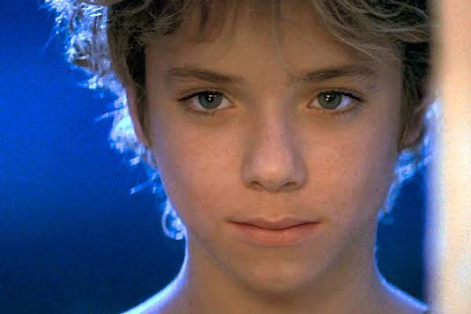

O personagem foi criado por J. M. Barrie para uma peça de teatro chamada “Peter and Wendy” em 1904 e só virou livro em 1911. A inspiração de Barrie para a criação da história e dos personagens veio dos filhos de uma amiga próxima, Sylvia Llewelyn Davies, com quem Barrie mantinha uma amizade muito próxima e presente.
Baseado na peça escrita por James Matthew Barrie, em 1904, o filme conta a história de Peter Pan, um menino que não queria crescer, que vive no mundo da fantasia conhecido como Terra-do-Nunca (onde a infância nunca passa) em companhia de um grupo de garotos conhecidos como Garotos Perdidos, que conhece Wendy e seus irmãos em uma noite em que ouvia escondido histórias de aventuras contadas pela garota, e os leva para a Terra-do-Nunca, onde eles vivem aventuras só imaginadas nas histórias contadas por Wendy.
A história de Peter Pan nos mostra diversos e importantes valores, como por exemplo a amizade e a lealdade. O autor descreve muito bem a importância de brincar e de sonhar, mas também aborda temas como a descoberta da criança sobre o crescimento, as mudanças e também sobre o amadurecimento e suas responsabilidades.

Roteiro: Autor da obra original J.M. Barrie; Roteirista Michael Goldenberg; Roteirista P.J. Hogan; Roteirista J.M. Barrie
Atores: Jeremy Sumpter (Peter Pan), Rachel Hurd-Wood (Wendy), Harry Newell (John), Freddie Popplewell (Michael), Jason Isaacs (Capitão Gancho), Ludivine Sagnier (Sininho)
Acesse o trailer aqui:
Trailer